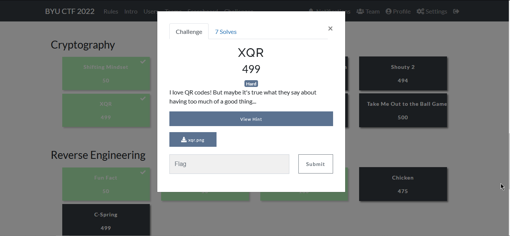
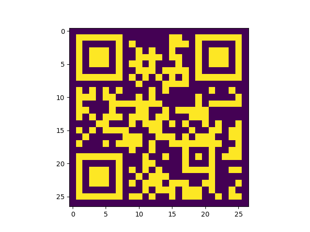

Category: Cryptography
Level: HardChallenge
I love QR codes! But maybe it's true what they say about having too much of a good thing...
Solution
XQR was a hard rated cryptography challange and it was in a whole
another level.
i solved this challenge with my teammate [0x3ashry] full respect for him please..

It doesn’t contain except one massive image contain thousands of QR Codes
I first tried to read the first QR Code but it gave me 85TK6eDfb{SXQfvR70VXX !!! then i asked my friend to help me with any idea, Through trial and errors we got that the size of each qr code is 27 pixels length and width, so we thought that cutting the whole image into smaller QR codes will make it easier we made a python script to make that for us.
from PIL import Image imggg = Image.open('xqr.png') inc = 27 for i in range(0, 2727 , 27): for j in range(0, 2727, 27): box = (j, i, j+27, i+27) # left, top, right, buttom img2 = imggg.crop(box) img2.save(r'QRCodes/myimage_' + str(i) + '_' + str(j) + '_cropped.jpg')
Now we have 10,201 QR Codes stored in file called QRCodes, And we stucked for a while… Then my friend realized from the name of the challange that XQR is near to XOR so what if we XORed all the QR codes together… we started with reading them using cv2 library from python-opencv and then in order to make my trick work he changed the readed image to binary 0 and 1, black and white pixels. Then he XORed each pixel with the same pixels in all the other 10,201 qr codes and saved it, Then displaying the result shows:import cv2 import matplotlib.pyplot as plt import os QR_dir = os.listdir(r"QRCodes") qr_codes = [] for qr in QR_dir: gray = cv2.imread("QRCodes/" + qr, cv2.COLOR_BGR2GRAY) _, binary = cv2.threshold(gray, 150, 1, cv2.THRESH_BINARY_INV) qr_codes.append(binary) for i in range(27): for j in range(27): for q in range(len(qr_codes)): if q+1 == 10201: break qr_codes[0][i][j] ^= qr_codes[q+1][i][j] plt.imshow(qr_codes[0]) plt.show()
Scanning it…
BOOOOOOOOOOOOOOOOOOOM !!! We got the flag byuctf{x0r_i5_u5eful}